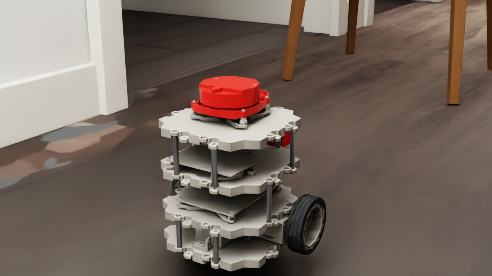
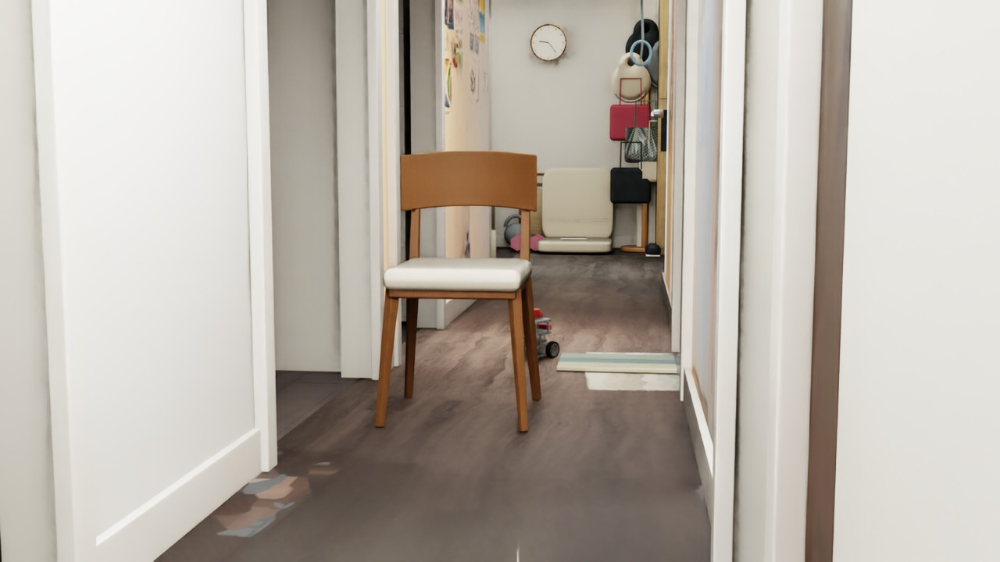

DEVLOG · 2026.09.25 · NAVBOT / REAL-WORLD ASSET
Bring a real chair
into the robot corridor test.
After collision validation, add the chair to navigation. The existing differential-drive NavBot and rule-only controller pass between its legs beneath the seat, rather than around the entire chair.
01 / FROM ASSET TO SCENE
Start with a clearly scoped experiment.
Reference the reconstructed chair USD into a separate corridor scene, slightly left of center. At about 45 × 45 × 80 cm, it stays static with segmented colliders preserving leg and under-seat gaps. The goal is behind the chair.
RTX LiDAR selects local direction, with limits of 0.08 m/s linear and 0.6 rad/s angular velocity. Goal direction uses ground-truth pose. No PPO or supplied obstacle coordinates are used here.

Approved observation view showing the robot, chair and corridor end together.
02 / MAKE THE TEST VISIBLE
Check the rendered appearance against real references.
The initial room was too dark and the robot almost silhouetted. Using home photos, adjust fill, three warm ceiling lights and rear daylight, plus soft floor light near the robot. Save the manually approved ObservationCamera for recording.
Restore the nearby left wall from a brown captured texture to white. Replace emissive yellowish flooring with a scene-lit, less saturated gray-brown wood material. This is photo-guided appearance correction, not measured lighting or material calibration.
Separate plastic, rubber and metal. Final custom plastic blends 70% original gray with 30% milky white, alongside a red LiDAR shell, black tires and metal supports. These are visual changes only; friction and dynamics stay unchanged.

Final warm-gray plastic and red LiDAR appearance. This close-up is for inspection; tests still use the overview camera.
03 / THE RECORDED RUN
Record arrival, stopping and contact.
Captured at about 5 Hz, encoded at 25 fps using simulation timestamps, with a one-second ending hold. Encoding rate is not capture rate.
| Final state | Goal reached |
|---|---|
| Driving simulation time | 28.3 s |
| Target distance | 11.0 cm (threshold 12 cm) |
| Maximum sampled contact-force component | 0.000 N |
| Displacement after braking | 0.53 mm |
Monitor all six robot bodies against the chair and non-floor corridor colliders. Pass requires goal arrival, force ≤ 0.1 N and braking travel < 3 cm. This run passed; sampled 0 N is not a continuous-contact guarantee.

End of test position: Robot arrives near the target behind the chair.
04 / REPLAY & LIMITS
Preserve evidence and limit conclusions.
This is one low-speed success with a fixed chair and endpoints. The route passes beneath the seat through leg gaps, not around the whole chair. Other orientations, random layouts, dynamic obstacles and low-object detection remain unvalidated.
In Isaac Sim, open the saved navbot_scanned_chair.usda , Select /World/ObservationCamera . Autonomous navigation requires the test script; Play alone does not run the controller. Save edits first, then run in Script Editor: navbot_chair_final_test.py , check the report and video frames.
View test results JSON · Download scripts and notes
The download depends on local scenes and assets; models are not included. Appearance changes live in the experiment layer, rather than updating every historical scene or source asset.
Detecting a chair
does not mean detecting a book on the floor.
Next, compare low objects with the height of the horizontal LiDAR. Separate sensing failures from control failures before changing perception or the test.
Next: depth perception, navigation and push tests